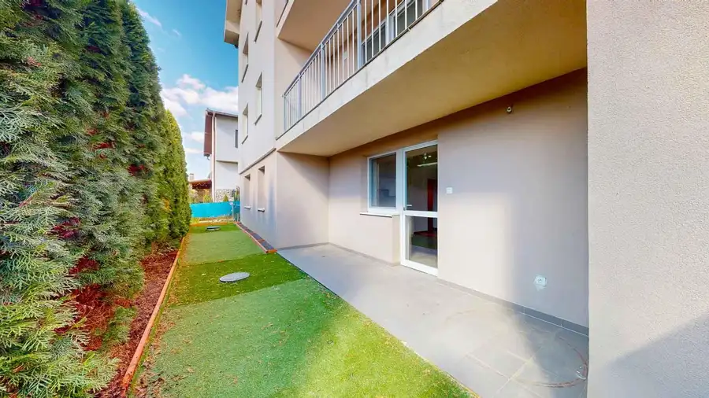
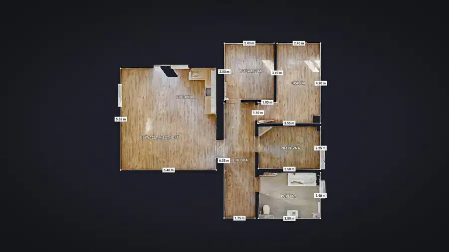
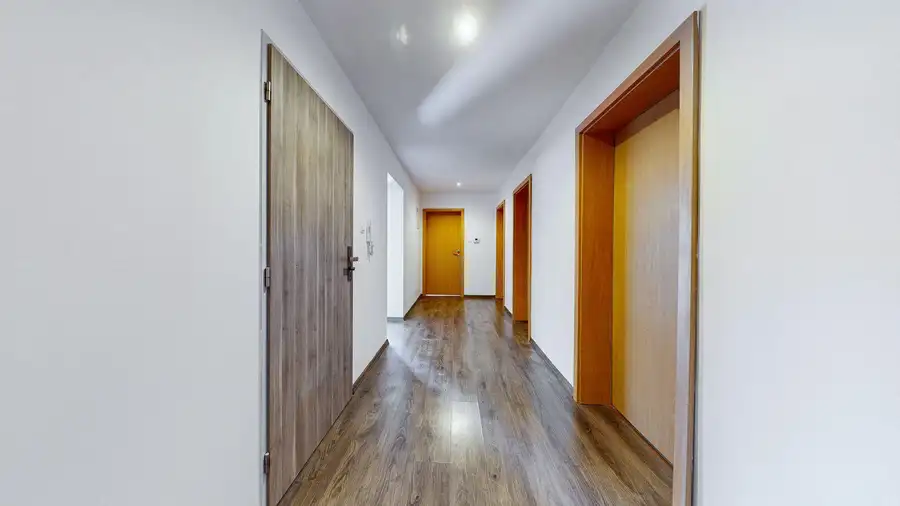
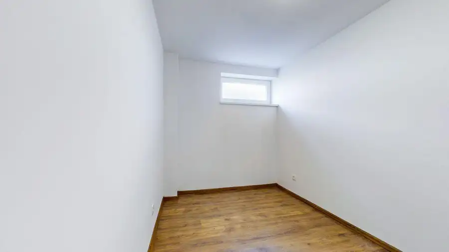
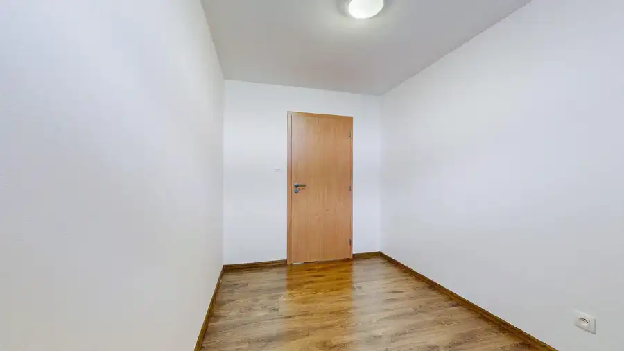
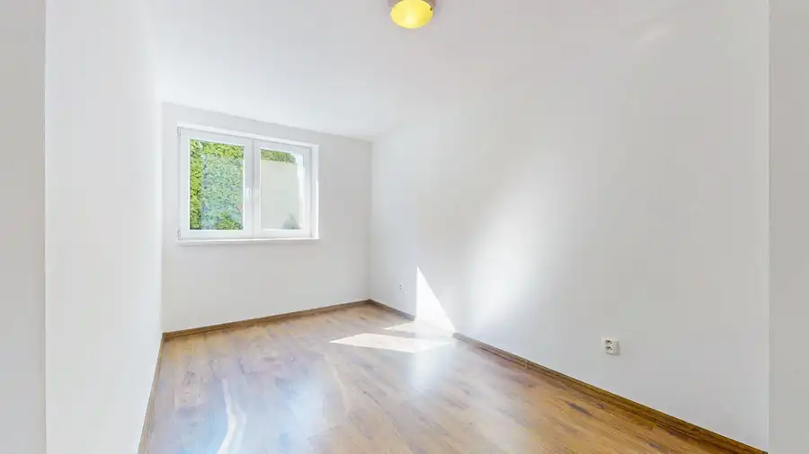
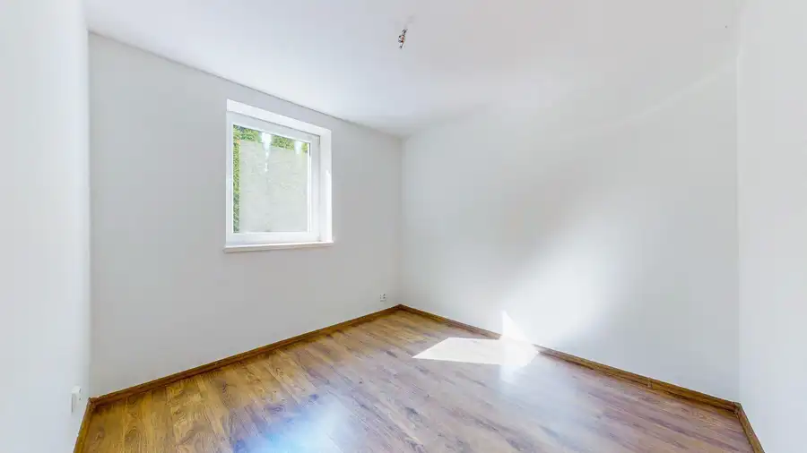

PRENÁJOM : 4-izbový nezariadený byt s terasou a vlastným pozemkom v Prašiciach pri Duchonke
Prašice








- Dispozícia4-izbový
- Plocha92 m²
- Poschodie1. z 3
- StavKompletná rekonštrukcia
- VlastníctvoOsobné
O nehnuteľnosti
TARGETreal Vám ponúka na prenájom priestranný 4-izbový byt v pokojnej a vyhľadávanej časti obce Prašice, len pár minút od rekreačnej oblasti Duchonka a v dobrej dostupnosti mesta Topoľčany.Byt sa nachádza na prízemí bytového domu na Slnečnej ulici. Veľkou výhodou je vlastná terasa s oploteným pozemkom priamo pred bytom, ktorá poskytuje príjemný priestor na oddych, posedenie či trávenie času s rodinou.Bytový dom vznikol prestavbou pôvodného rodinného domu v rokoch 2015 – 2016 a nachádza sa v ňom iba 8 bytových jednotiek. Pri prestavbe boli zrealizované nové rozvody, strecha a zateplenie objektu. Parkovanie je zabezpečené priamo pri bytovom dome na pozemku v spoluvlastníctve vlastníkov bytov.BYT :prenajíma sa nezariadenývoľný okamžite4-izbový bytprízemie / 1. NPbez výťahuvlastné kúrenie a ohrev vodyplynový kotol priamo v bytepodlahové kúrenieterasaoplotený pozemok pred bytompivnicaplastové oknálaminátové podlahy a dlažbajednoduchá kuchynská linkainteriérové dverebezpečnostné vstupné dverejužná orientáciaparkovanie pri bytovom domeDISPOZÍCIAByt pozostáva zo vstupnej chodby, veľkej kúpeľne s vaňou, umývadlom a WC, pracovne, dvoch samostatných spální a priestrannej obývacej izby spojenej s kuchynskou časťou. Z obývacej izby je priamy vstup na terasu a oplotený pozemok.LOKALITAPrašice ponúkajú pokojné bývanie s dobrou občianskou vybavenosťou – v obci sa nachádzajú obchody, služby a škola. Veľkým benefitom je blízkosť rekreačnej oblasti Duchonka, ktorá ponúka možnosti kúpania, turistiky, cykloturistiky a oddychu v prírode.Lokalita je zároveň dobre dostupná do Topoľčian a okolitého regiónu.NÁJOM : 700,- EUR/ mesačne vrátane energií, bez internetupri podpise nájomnej zmluvy sa hradí : nájom vopred a depozit 1000,- EURV prípade záujmu o obhliadku alebo bližšie informácie ma neváhajte kontaktovať:Ing. Natália Ďurišová0915 774 263natalia.durisova@targetreal.sk
Parametre
- Cena vrátane energií
- Nie
- Druh
- 4 izbový byt
- Dátum zverejnenia
- 02. 10. 2026
- Energetický certifikát budovy
- nie je
- Orientácia
- Južná
- Plocha predzáhradky
- 24 m²
- Podlažie
- 1
- Počet izieb / miestností
- 4
- Počet nadzemných podlaží
- 3
- Počet pivníc
- 1
- Rok kolaudácie
- 2015
- Rok poslednej rekonštrukcie
- 2025
- Rok výstavby
- 2015
- Stav nehnuteľnosti
- Kompletná rekonštrukcia
- Typ
- Prenájom
- Typ konštrukcie
- Zmiešaná
- Vlastníctvo
- Osobné
- Vybavenie
- Pivnica
- Vykurovanie
- Podlahové
- Úžitková plocha
- 92 m²
Kde to je


Mohlo by Vás zaujímať
 BytNové
185 000 €Pripravujeme - predaj : 3-izbový byt s balkónom | Fončorda | mládežnícka
Banská Bystrica
3-izbový63 m²4. podlažie
BytNové
185 000 €Pripravujeme - predaj : 3-izbový byt s balkónom | Fončorda | mládežnícka
Banská Bystrica
3-izbový63 m²4. podlažie
 BytNové
127 500 €Rekreačná nehnuteľnosť v tesnej blízkosti Duchonky – 4-izbový byt s terasou
Prašice
4-izbový97 m²
BytNové
127 500 €Rekreačná nehnuteľnosť v tesnej blízkosti Duchonky – 4-izbový byt s terasou
Prašice
4-izbový97 m²
 PozemokNové
Cena na vyžádáníPREDAJ : pozemok určený v územnom pláne na výstavbu
Žilina
6715 m²
PozemokNové
Cena na vyžádáníPREDAJ : pozemok určený v územnom pláne na výstavbu
Žilina
6715 m²